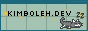

Blog
I'm still working to get an actual blog set up here, with like dates and backlogs and things, but while you're here, enjoy this site update log (soon to be re-homed!)
Update Log
3.20.26
- Updated the README
- Updated the site favicon
- Apparently image links can be case-sensitive - fixed my chicken sprites!
- LAUNCHED THE SITE
3.16.26
- Added a
robots.txtfile to block AI scraping (you can learn how to do this here!)
3.15.26
- Wrote the first iteration of my 'About' page
- Fixed a bug with the music player source URLs
- Created my first ever site button gif!!

- Started adding links, mainly for cool tools I use
- Added video descriptions & some styling to the video essays page
3.06.26
- Updated site title and tagline: 'your mind is filled with thoughts of internet'
- Added 'Whirling in Rags - 8am' to curate only the chillest of vibes
3.02.26
- Messed around with the YouTube API before realizing it was not really what I was looking for
2.27.26
- Got video essay page script to pull in videos from JSON file - still need to style them
2.25.26
- Added grid background image
- Created first mockup up of a site button with Sadgrl's Codepen
- Wrote up first draft of the home page's welcome text